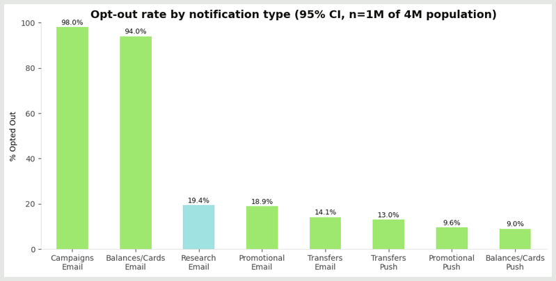
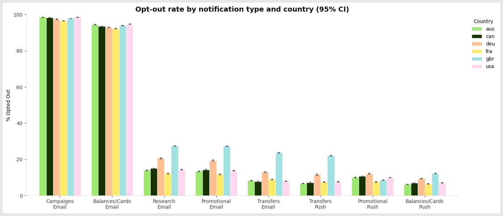
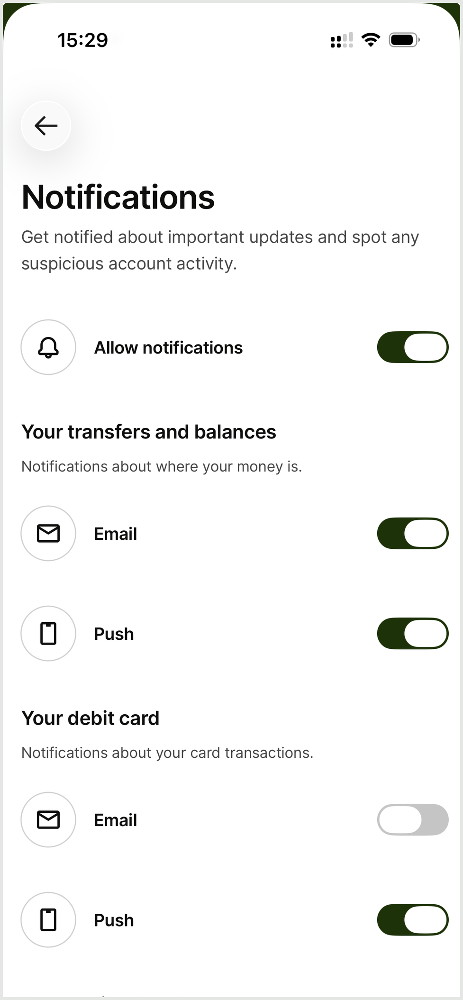
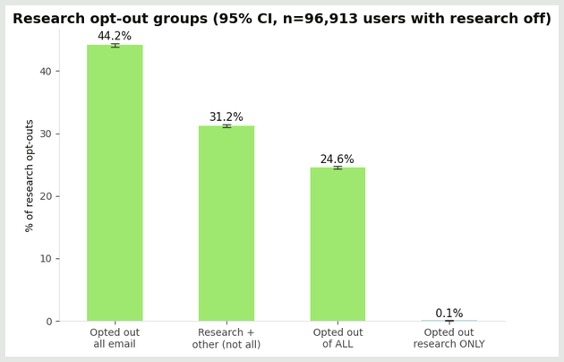
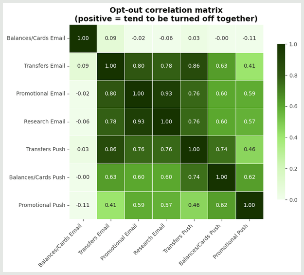
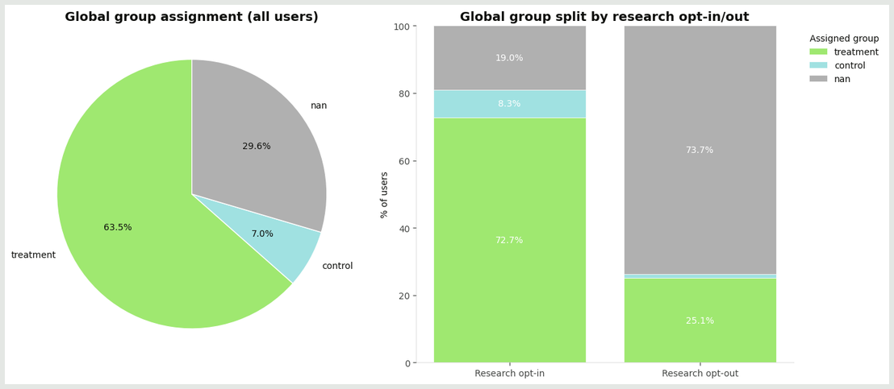
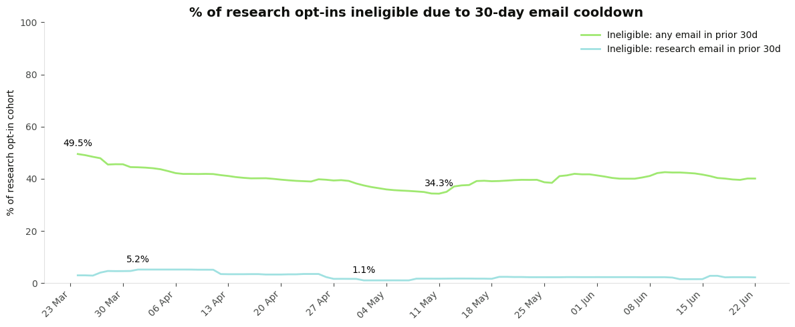

What's going on with research email opt-outs?
tl;dr
- At most, 20% of users are actually opting out from research outreach.
- The current opt-out rate is likely exaggerated due to the notifications page design. Redesigning this page could ensure that new users aren't inadvertently opting out. Additional steps would be required to rectify the issue for the 25 - 70% of users for whom the intent is unclear
- The Global Experimentation Framework has been excluding users from research outreach. This exclusion hit ~30% of opted-in users on average, and in some studies up to 90% depending on the segment. Research was included in this exclusion by default rather than by design, the filter was applied as part of a broader "key-email-subjects" exclusion. CRM has confirmed research should sit outside it, and this has now been corrected.
- Outreach cooldown groups research and marketing outreach as one, and makes users who have received outreach in the last 30 days ineligible. While it is good practice to not over-email users, we need to consider whether email and marketing should be handled separately. As currently implemented, up to 50% of users are ineligible for research emails on a daily basis. If research outreach was handled separately, this would come down to 5%.
The detail
Researchers struggle to recruit and survey from users, as Braze filters substantially reduce eligible contacts. Upwards of 95% of target customers can be deemed ineligible to contact, but often that ineligibility is bundled into a single "email-eligibility" criterion, which makes it hard to see which underlying filter is doing the work.
Such high opt-out rates materially limit UXR; they restrict who we can speak to for qualitative research, make quantitative research near impossible, and introduce significant bias into any research we are able to do.
| Filter (system) | What it's designed to do | Estimated impact on the research audience | Intent vs. artifact | Status |
|---|---|---|---|---|
| Notifications-page opt-out | Let users manage notification preferences in one place | Up to ~20% of users have research email off (up to ~35% in GBR) | ~70% of those also turned off all email or all notifications — i.e. email/notif-wide actions, not research-specific | Open — consider page redesign + re-opt-in mechanism |
| Global Experimentation Framework (treatment-only) | Give a high-level, long-term view of channel-level CRM performance | Excludes ~30% of opted-in users on average; up to ~90% in some segments | Research was filtered by default, outside the framework's intended purpose | Resolved — research no longer filtered |
| Global cooldown (30-day, any email) | Prevent over-contacting users, which can drive opt-outs and low response | ~35–50% of the opted-in cohort ineligible on a given day | Only ~1–5% is attributable to prior research outreach; the rest is marketing email | Open — business decision on whether to scope research separately |
Current opt-out rates and what may drive them
I took a sample of 1,000,000 users across UK, US, CA, FR, DE, and AUS and looked at the opt out preferences from the notifications screen.
Campaign email and cards & balances email have such high opt-out rate and so little variance it must be assumed these are default opt-in (somebody check me on this).
Nearly 20% opt out of Research Emails, essentially opting out at the same rate as Promotional Emails. It is unusual that these are nearly identical, suggesting something is up.


Breaking this down by country, the main takeaway from this is that GBR is a pretty big outlier in the opt outs. We should bear that in mind when doing research in the UK.
These opt out rates are pretty high - 20% on average, up to 35% in the UK. To be fair, this is higher than I expected. But, even still this is nowhere near the opt-out rates that Braze reports.
Notifications preferences design
Users can opt-out from receiving research outreach through Settings -> Notifications -> Notifications path.
The notifications screen has a master toggle to allow notifications at all, and then groups different types of notifications.
Invitations to share feedback is included on this page, below the fold.

The notifications page groups email preferences together, which makes sense for most users — but it could mean that research is bundled into a broader "stop emailing me" action, or inadvertently opting people out without a specific intent to decline feedback.
There are two methods through which this could happen:
- The user toggles off "Allow notifications", without even realising that they have opted out of research
- The user quickly quickly toggles off all email channels, assuming these are all of a similar nature
Looking at just the people who opted out of research emails, we can break these into four buckets:
- People who opted out of ONLY research emails (clear signal of intent)
- People who opted out of research emails and one or two other things (potentially a signal of intent)
- People who opted out of ALL EMAIL communication (purge of email communication rather than pure intent)
- People who opted out of ALL NOTIFICATIONS (what we'd see if they flipped the toggle rather than pure intent)
Three things stand out:
- Nearly half of users who opt of research emails opted out of all emails. This strongly indicates it was a "don't email me" purge rather than a "don't ask me for feedback" signal of intent
- About a quarter of the people who have opted out of research emails have opted out of everything, which is a potential signal that they've simply toggled all notifications off
- Basically no one is looking at this screen and choosing ONLY to not give feedback

This is a strong indication that people are going into this page to turn off marketing emails, and research is bundled into the same action. Without further data, you could argue that the ~30% who choose surveys and other options are being selective and that's a signal of intent.
But, the opt out of all and opt out of all email (~70% of survey opt outs) are probably a symptom of poor design of the notifications page than actual intent not to give feedback. In other words, the design of this page might be causing us to lose up to 70% of our potential respondents & participants.

The email-to-email correlations are higher than email-to-push or push-to-push correlations. That tells you:
People are turning off email channels as a block, not individually. When someone opts out of Promotional Email, they very likely also opt out of Transfers Email, Surveys Email, etc. The push channels don't show the same clustering as they are toggled more independently.
This is consistent with the chart above and the idea that the research opt-out is being driven by the email grouping rather than feedback-specific intent. It suggests there's either:
- A UI pattern that groups email toggles together (or an "unsubscribe all emails" link at the bottom of an email)
- A user mental model of "I don't want emails from Wise" rather than "I don't want to hear about research specifically"
Either way, the research opt-out is likely being driven by an anti-email sentiment, rather than anti-feedback sentiment.
Given this information there seem to be two things which need to be done:
- Move the Research Opt-In to a different part of settings.
- Research is not part of the same mental space as marketing, and being included here is causing inadvertent opt-outs.
- Solving this problem will ensure that any research opt-outs going forward are true indications of intent to not give feedback
- Identify a mechanism to give people who have inadvertently opted out a chance to opt back in. This could be coupled with a redesign. The exact mechanism will require some additional research.
What drives the difference between user opt-outs and Braze eligibility?
The above analysis was based on the notifications preferences table, which the CRM tables are built on. It's worth checking to see that the CRM tables and notifications preferences tables line up.
| n | INT_NOTIFICATION_OPT_OUTS | CRM_LOGGED_PREFS (prefs log) | |||
|---|---|---|---|---|---|
| n | has opt-out record | no opt-out record | CRM = False | CRM = True | |
| research_email = True | 403,087 | 0.7% | 99.3% | 0.0% | 100.0% |
| research_email = False | 96,913 | 97.1% | 2.9% | 99.8% | 0.2% |
The CRM tables are aligned with the notifications preferences, so the gap between what the preferences show and the braze opt outs must be coming from somewhere else.
Global Experimentation Framework
Braze also pulls from the global experimentation framework to process exclusions. Users must be in the "treatment" condition to qualify for an survey.

This accounts for a substantial drop of eligible users out of the opted in pool.
~10% of opted-in users will not be eligible for a study due to assignment to the control.
~20% of opted-in users will not be eligible due to not being assigned to a group at all. This can disproportionately impact your study if you are studying a group that aligns with one of the reasons they may not be assigned.
Of note:
- Users are not assigned until they are 30 - 40 days old. If your target audience includes new users, you will be disproportionately impacted
- Users who opt out of promotional emails are automatically not assigned. As shown above, many users may be opting out of promotional emails and research emails at the same time inadvertently, putting them forever into unassigned group. If they ever at a later date opt IN to research emails, we would never be able to respect that intent as the assignment will never change.
The framework works well for its intended purpose and is methodologically sound for giving a long-term assessment of CRM performance. Research outreach simply sits outside that purpose, and CRM has confirmed it shouldn't be subject to the filter.
The "treatment"-group filter had been applied by default as part of the "key-email-subjects" exclusion; this has now been resolved.
Going forward, if you see an inexplicably large drop-off in Braze filtering, checking whether this filter is active is one of the first things to confirm.
Global Cooldowns
By default Braze will not send to users if they are in a cooldown period - i.e., within 30 days of receiving another outreach.
This is methodologically a good thing - if we reach out to users too frequently, this can lead to bad side effects including opt-outs, unsubscribes, and poor response rates.
In the current implementation, research surveys are grouped in with marketing outreach, so if a user received a marketing outreach they would be ineligible to be contacted by research for at least 30 days afterwards. The question is whether that grouping is the right fit for research, or whether research sits in a different space in users' minds.
The impact on this on research availability is below.

The question of whether or not it is reasonable to group research outreach into the same cooldown channels as marketing outreach is a businesses decision, which should be evaluated.
As it stands, on any given day, research loses between ~35 - 50% of eligible respondents due to cooldown eligibility from having received any email in the last 30 days. Only 1-5% of those were due to prior research outreach.
We need to explore whether research email has similar effects on unsubscribe rates from marketing outreach as marketing outreach does, or whether the different sources (Wise Research vs Wise) mitigates this effect and provides an opportunity to get research outreach to more opted-in users.